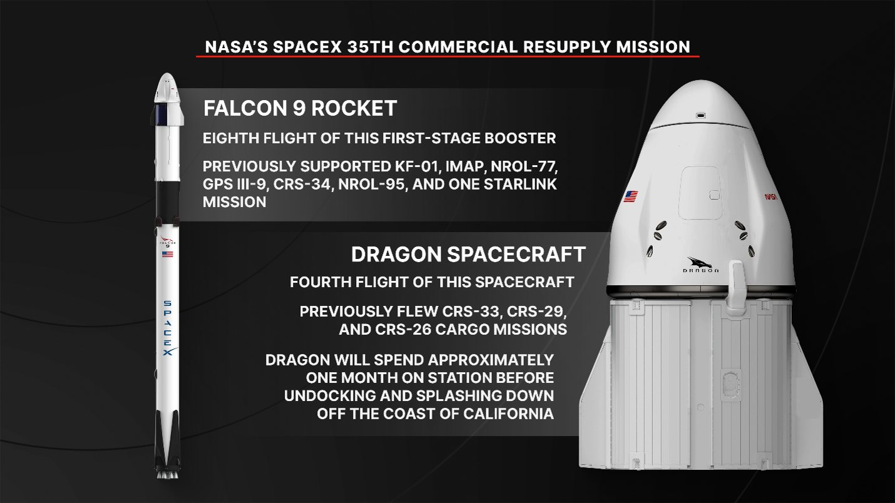
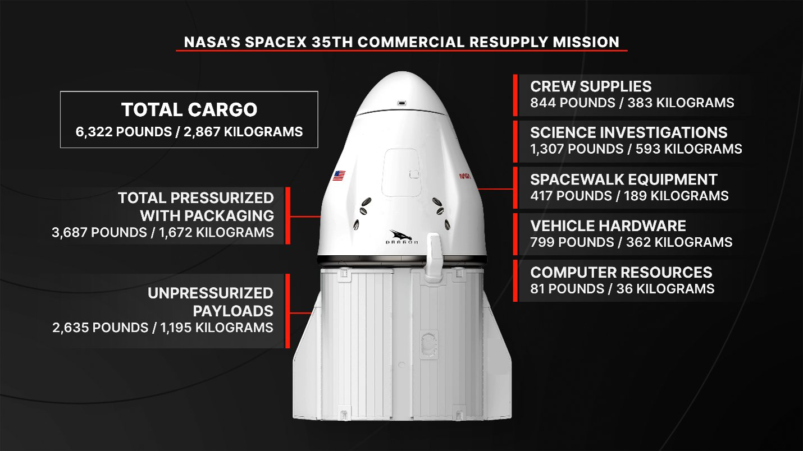
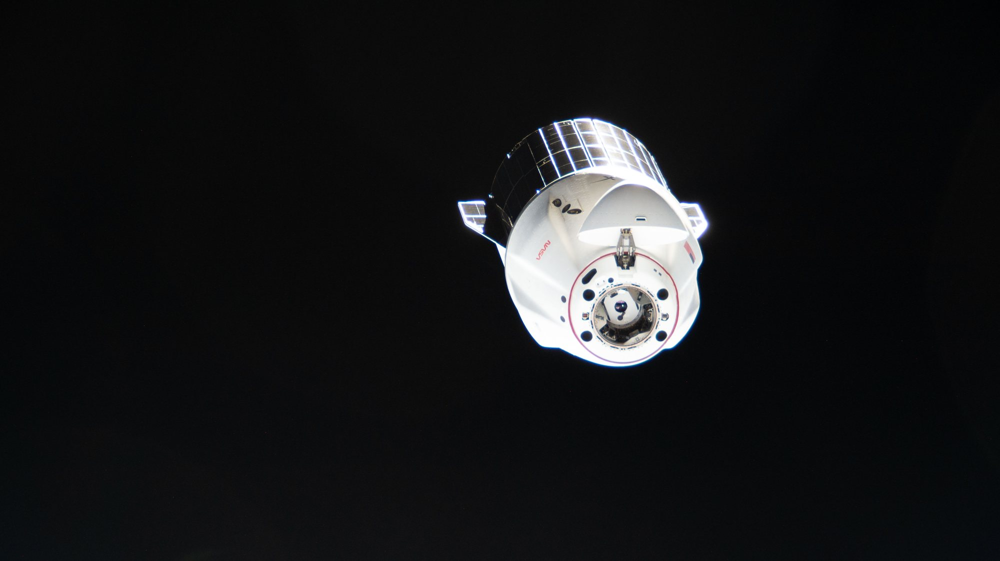

La prossima consegna di SpaceX alla Stazione Spaziale Internazionale non è un cargo come tanti. Nel bagagliaio non pressurizzato del Dragon, il cosiddetto trunk, viaggia l’ultima coppia di International Space Station Roll-Out Solar Arrays, i pannelli arrotolabili che dal 2021 vengono montati sopra le vecchie ali solari della Stazione. Con questa coppia il programma di potenziamento si chiude, e la NASA lo collega esplicitamente non solo alla ricerca di oggi ma anche all’ultima fase della vita del complesso orbitale: il rientro controllato a fine missione.
Il piano di volo
NASA e SpaceX puntano alle 6:33 del mattino ora della costa est americana di martedì 13 ottobre, cioè le 12:33 in Italia, per il decollo dal Space Launch Complex 40 della Cape Canaveral Space Force Station, in Florida. Se il conto alla rovescia dovesse fermarsi, esiste una seconda opportunità mercoledì 14 ottobre alle 6:08 ora della Florida, le 12:08 italiane. Le previsioni meteo aggiornate l’11 ottobre indicano oltre il 95 per cento di condizioni favorevoli, con le nubi cumuliformi come unico elemento da sorvegliare.
Il primo stadio del Falcon 9 è al suo ottavo volo: in precedenza ha lanciato KF-01, IMAP, NROL-77, GPS III-9, CRS-34, NROL-95 e una missione Starlink. Dopo la separazione non andrà su una nave drone in mare ma tornerà a terra, sulla Landing Zone 40, a poca distanza dalla rampa da cui è partito. La capsula è un veterano: è il Dragon cargo C211, al quarto viaggio dopo CRS-26, CRS-29 e CRS-33.
Dopo circa 52 ore di avvicinamento, con una serie di accensioni che alzano progressivamente l’orbita, il Dragon dovrebbe agganciarsi in modo completamente automatico alla porta rivolta verso lo spazio del modulo Harmony, giovedì 15 ottobre intorno alle 11 ora della costa est, le 17:00 in Italia. A seguire l’arrivo dall’interno della Stazione ci saranno l’astronauta NASA Anil Menon e l’astronauta canadese Joshua Kutryk, membri dell’Expedition 75. La NASA trasmetterà in diretta sia il lancio, con copertura dalle 12:15 ora italiana, sia l’attracco.

Gli ultimi iROSA e il futuro rientro della Stazione
I pannelli iROSA sono una nuova generazione di ali solari che si srotolano nello spazio come un tappeto: occupano molto meno volume al lancio rispetto ai pannelli originali e forniscono una potenza paragonabile. Vengono installati in posizione inclinata sopra le ali storiche, che dopo molti anni di esposizione allo spazio hanno perso efficienza. Sei unità sono già al loro posto; la coppia di CRS-35 è l’ultima prevista e chiude l’aggiornamento dell’impianto elettrico della Stazione.
La NASA motiva questo ultimo passo in modo preciso: l’energia aggiuntiva serve a sostenere le operazioni critiche fino alla fine, incluso il deorbit sicuro e controllato del complesso. È un dettaglio che riporta a SpaceX anche da un’altra strada: è proprio l’azienda di Hawthorne ad avere il contratto per il veicolo che dovrà spingere la Stazione verso il rientro in un’area remota dell’oceano a fine vita operativa. Il Dragon di domani, in altre parole, porta in orbita parte dell’energia che servirà a gestire quel finale.
I due pannelli viaggiano nel trunk perché sono destinati all’esterno: una volta che il Dragon sarà attraccato, verranno estratti con il braccio robotico e montati durante attività extraveicolari, come avvenuto per le coppie precedenti. Le date delle passeggiate spaziali per l’installazione non sono ancora state comunicate.

Che cosa c’è a bordo
Il Dragon trasporta in tutto 6.322 libbre, pari a 2.867 chilogrammi. Nella parte pressurizzata viaggiano 383 kg di rifornimenti per l’equipaggio, 593 kg di esperimenti scientifici, 189 kg di materiale per le attività extraveicolari, 362 kg di componenti per la Stazione e 36 kg di risorse informatiche. Il resto è il carico esterno.
Fra l’hardware tecnico spiccano tre voci. La prima è un orinale collassabile di emergenza con il relativo materiale di supporto: un’unità di dimostrazione e prova legata alla missione lunare Artemis III. La seconda è un grande guscio di schiuma che sale vuoto, perché al ritorno dovrà proteggere il giunto del braccio robotico Canadarm2 che si è guastato ed è stato sostituito durante una passeggiata spaziale il 30 giugno: a terra i tecnici lo analizzeranno e lo ricondizioneranno. La terza è un pacchetto di ricambi per la manutenzione ordinaria: una pompa di dosaggio e un sensore di qualità per il sistema igienico, più un attrezzo micro-conico usato dal robot della Stazione per maneggiare unità sostituibili e carichi esterni.
La scienza: occhi, cuore, vetro e cervello
Gli esperimenti principali sono quattro. LambdaVision-1 prova a costruire retine artificiali in microgravità, deponendo uno strato sottilissimo dopo l’altro: senza la sedimentazione dovuta al peso, gli strati dovrebbero risultare più uniformi e stabili, e gli impianti potrebbero un giorno aiutare pazienti con malattie della retina oggi incurabili. Stellar Spheroids studia come crescono e funzionano modelli tridimensionali di tessuto cardiaco umano, verificando se l’assenza di peso favorisca reti vascolari più evolute, utili per test farmacologici su larga scala.
ELF-Unconventional Glass 2 osserva come si formano in microgravità vetri ottenuti da elementi non tradizionali: i campioni verranno fusi e risolidificati in orbita e poi riportati a terra. In prospettiva questi materiali potrebbero offrire più resistenza, migliori proprietà ottiche e maggiore durata per veicoli e habitat spaziali. MINDS, infine, lavora su organoidi cerebrali per capire l’infiammazione legata alle malattie neurodegenerative, usando i cosiddetti villaggi di organoidi, che uniscono cellule di persone diverse per rappresentare meglio la varietà dei pazienti. L’obiettivo è trovare nuovi bersagli terapeutici per Alzheimer, Parkinson e sclerosi multipla.

Il ritorno a metà novembre
A differenza dei cargo che si disintegrano al rientro, come il Cygnus, il Dragon riporta a terra materiale intatto, ed è proprio questa la parte meno visibile della missione. Dopo circa un mese attraccato, a metà novembre la capsula si sgancerà e ammarerà nel Pacifico al largo della California con ricerche che hanno tempi stretti e hardware da riparare: il giunto guasto del Canadarm2, una tuta spaziale da ricondizionare, un gruppo pompa per il controllo di fluidi e pressione del processore delle urine e un’unità di filtrazione del sistema di trattamento dell’acqua.
| Data | Fase | Che cosa succede |
|---|---|---|
| 11 agosto | Kennedy Space Center | L’ultima coppia di iROSA viene preparata per il volo |
| 13 ottobre, 12:15 | Diretta NASA | Inizio della copertura del lancio |
| 13 ottobre, 12:33 | Lancio | Falcon 9 da SLC-40; rientro del primo stadio su Landing Zone 40 |
| 14 ottobre, 12:08 | Riserva | Seconda opportunità in caso di rinvio |
| 15 ottobre, circa 17:00 | Attracco | Aggancio automatico alla porta zenitale del modulo Harmony |
| metà novembre | Ritorno | Sgancio e ammaraggio nel Pacifico al largo della California |
Che cosa aspettarsi adesso
La notte prima di CRS-35 SpaceX ha in programma un altro Falcon 9, dalla California: la missione Starlink 15-25 da Vandenberg, con decollo pianificato verso le 2:11 italiane del 13 ottobre. È il ritmo ordinario della flotta, ma per la Stazione conta la finestra della mattina dopo. Le cose da seguire sono tre: la conferma del decollo e del rientro del booster alle 12:33, la separazione del Dragon dal secondo stadio pochi minuti più tardi, e l’attracco di giovedì pomeriggio. Poi arriverà il lavoro più delicato, quello fuori dalla Stazione, con l’installazione degli ultimi iROSA.
Il dossier sulle parole di Elon Musk riguardo a Starship Flight 14 e al prossimo volo passa all’archivio Notizie: questa pagina mette in primo piano una missione meno spettacolare ma concreta, che chiude un capitolo della storia della Stazione e ne prepara l’ultimo.
Fonti pubbliche e tracce
Ultimo aggiornamento editoriale: 12 ottobre 2026, 9:25 ora italiana. Nel corpo non si ripete la fonte a ogni frase: le tracce sono raccolte qui. Orari convertiti dall’ora della costa est (EDT, sei ore indietro rispetto all’Italia).
- NASA, comunicato del 7 ottobre 2026: lancio alle 6:33 EDT del 13 ottobre da SLC-40, oltre 6.300 libbre di carico, attracco alle 11 EDT del 15 ottobre alla porta zenitale di Harmony, programma delle dirette, ritorno a metà novembre.
- NASA, scheda della missione CRS-35: esperimenti LambdaVision-1, Stellar Spheroids, ELF-Unconventional Glass 2 e MINDS; iROSA e deorbit controllato; orinale per Artemis III; guscio per il giunto del Canadarm2; carico di ritorno; Menon e Kutryk; infografiche con masse e storia di razzo e capsula.
- SpaceX, pagina missione CRS-35: riserva del 14 ottobre alle 6:08 ET, quarto volo della capsula (CRS-26, CRS-29, CRS-33), circa 52 ore di avvicinamento, ottavo volo del primo stadio e missioni precedenti, atterraggio su Landing Zone 40.
- International Space Station (NASA) su X, 11 ottobre 2026: conferma del lancio alle 6:33 EDT di martedì e dell’arrivo all’Expedition 75 giovedì alle 11.
- NASA Image and Video Library, 11 agosto 2026: preparazione degli iROSA per CRS-35 al Kennedy Space Center; sei unità già installate, ultima coppia per completare l’aggiornamento.
- Launch Library 2, scheda CRS-35: aggiornamento meteo dell’11 ottobre (oltre il 95% favorevole, regola delle nubi cumuliformi), identificativi C211 del Dragon e B1096 del primo stadio (verifica crociata).
- NASA, giugno 2024: assegnazione a SpaceX del contratto per lo U.S. Deorbit Vehicle, il veicolo destinato al rientro controllato della Stazione (contesto).
- Launch Library 2, scheda Starlink 15-25: lancio pianificato da Vandenberg alle 00:11 UTC del 13 ottobre (2:11 ora italiana).
Fotografie utilizzabili
Tutte le immagini sono materiale NASA in pubblico dominio. La copertina mostra l’hardware reale della notizia, gli iROSA di CRS-35 al Kennedy Space Center (NASA/Clayton Rougelot); due figure sono le infografiche ufficiali NASA della missione; l’ultima è una foto NASA di un Dragon cargo in partenza dalla Stazione a giugno 2026, usata come immagine di contesto e indicata come tale. Dettagli in scheda dei crediti fotografici.
Apri il dossier Musk su Starship Flight 14 archiviato · Archivio Notizie · Torna a SpaceX